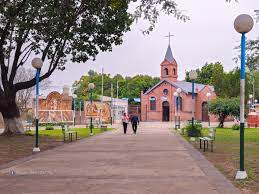
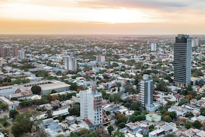

Tour da le Misión Argentina Resistencia
Home
Apóstoles
Puerto Tirol
Formosa Capitál
Corrientes Capitál
Posadas
Puerto Tirol, Misiones

This is where I served! It's a very quaint, catholic village.
Resistencia, Chaco

This is the mission headquarters!